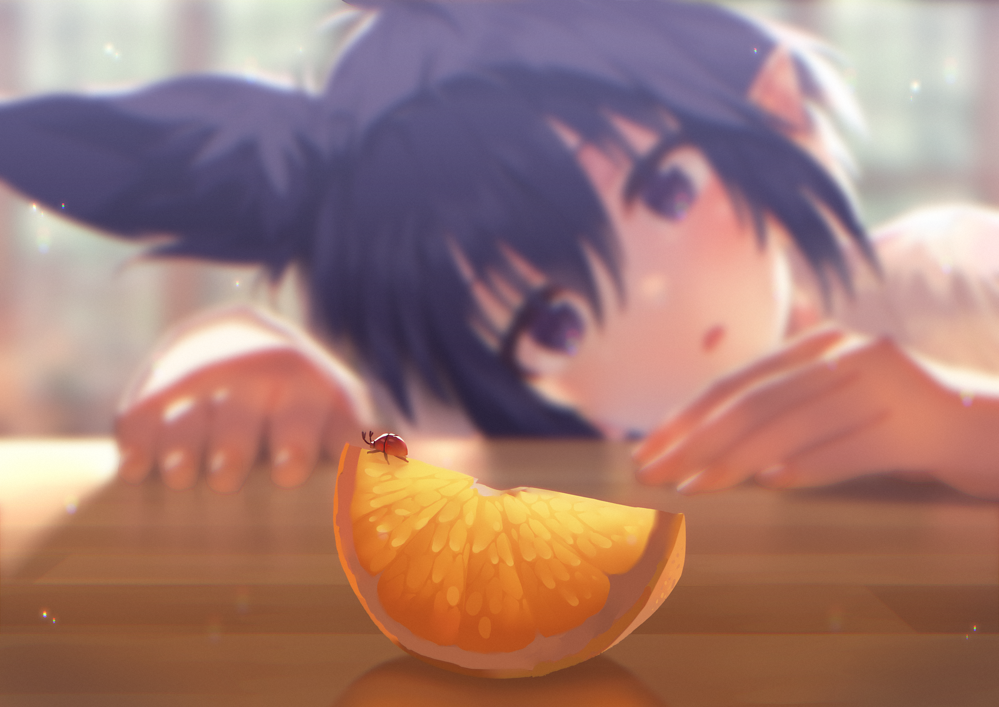

<!DOCTYPE html><html><head><meta name="generator" content="Hexo 3.9.0"><meta charset="utf-8"><meta http-equiv="X-UA-Compatible" content="IE=edge"><title>关于我的事 | 料峭春风吹酒醒</title><meta name="description" content="A minimal hexo theme."><meta name="keywords" content="hexo,theme,minimal,otakism"><meta name="HandheldFriendly" content="True"><meta name="apple-mobile-web-app-capable" content="yes"><meta name="viewport" content="width=device-width,initial-scale=1,maximum-scale=1"><meta name="description" content="朱宸，1996年10月生人，永远19岁的胖仙女。社畜，当前坐标苏州，毕业于种树大学的计算机本科。没有远大志向，只希望赚够钱了每天咸鱼。希望时光对人温柔以待，所有的努力终不辜负。UPDATE 2019.9.22 - TBC."><meta property="og:type" content="website"><meta property="og:title" content="关于我的事"><meta property="og:url" content="http://yoursite.com/about/index.html"><meta property="og:site_name" content="料峭春风吹酒醒"><meta property="og:description" content="朱宸，1996年10月生人，永远19岁的胖仙女。社畜，当前坐标苏州，毕业于种树大学的计算机本科。没有远大志向，只希望赚够钱了每天咸鱼。希望时光对人温柔以待，所有的努力终不辜负。UPDATE 2019.9.22 - TBC."><meta property="og:locale" content="zh-CN"><meta property="og:image" content="http://yoursite.com/about/aboutpic.jpg"><meta property="og:updated_time" content="2019-09-22T07:19:41.838Z"><meta name="twitter:card" content="summary"><meta name="twitter:title" content="关于我的事"><meta name="twitter:description" content="朱宸，1996年10月生人，永远19岁的胖仙女。社畜，当前坐标苏州，毕业于种树大学的计算机本科。没有远大志向，只希望赚够钱了每天咸鱼。希望时光对人温柔以待，所有的努力终不辜负。UPDATE 2019.9.22 - TBC."><meta name="twitter:image" content="http://yoursite.com/about/aboutpic.jpg"><link rel="icon" href="/favicon.png"><script type="text/javascript">var HexoConfig={root:"/",search:{enabled:"false"}}</script><link href="https://fonts.googleapis.com/css?family=Inconsolata|Roboto:300,400,700" rel="stylesheet"><link rel="stylesheet" href="/style.css"><script>function setLoadingBarProgress(e){document.getElementById("loading-bar").style.width=e+"%"}</script></head></html><body><div id="loading-bar-wrapper"><div id="loading-bar"></div></div><script>setLoadingBarProgress(20)</script><div id="site-wrapper"><header id="header"><div id="header-wrapper" class="clearfix"><a id="logo" href="/"> <span id="site-desc">spring chill </span></a><button id="site-nav-switch"><span class="icon icon-menu"></span></button></div><aside id="site-menu"><nav><a href="/" class="nav-home nav">Home </a><a href="/about" class="nav-about nav">About </a><a href="/archives" class="nav-archives nav">Archives</a></nav></aside></header><script>setLoadingBarProgress(40)</script><main id="main" role="main"><article id="page-" class="post article white-box article-type-page" itemscope itemprop="blogPost"><h2 class="title"><a href="/about/index.html">关于我的事</a></h2><time>5月 30, 2017</time><section class="content"><div class="article-entry" itemprop="articleBody"><p></p><p><strong>朱宸</strong>，1996年10月生人，永远19岁的胖仙女。<br>社畜，当前坐标苏州，毕业于种树大学的<strong>计算机</strong>本科。<br>没有远大志向，只希望赚够钱了每天咸鱼。希望时光对人温柔以待，所有的努力终不辜负。</p><p>UPDATE 2019.9.22 - TBC.</p></div><div class="article-tags tags"></div></section></article><script>setLoadingBarProgress(60)</script></main><footer id="footer" class="clearfix"><div class="social-wrapper"><a href="/atom.xml" class="social rss" target="_blank" rel="external"><span class="icon icon-rss"></span></a></div><div>Theme <span class="codename">Typescript</span> designed by <a href="http://rakugaki.me/" target="_blank">Art Chen</a>.</div><div>&copy; <a href="/">料峭春风吹酒醒</a></div></footer><script>setLoadingBarProgress(80)</script></div><script src="https://code.jquery.com/jquery-2.1.4.min.js"></script><script>window.jQuery||document.write('<script src="/js/jquery.min.js"><\/script>')</script><script src="/js/jquery.fitvids.js"></script><script>var GOOGLE_CUSTOM_SEARCH_API_KEY="",GOOGLE_CUSTOM_SEARCH_ENGINE_ID="",ALGOLIA_API_KEY="",ALGOLIA_APP_ID="",ALGOLIA_INDEX_NAME="",AZURE_SERVICE_NAME="",AZURE_INDEX_NAME="",AZURE_QUERY_KEY="",SEARCH_SERVICE="google",universalSearchConfig={};"google"===SEARCH_SERVICE?universalSearchConfig={searchService:SEARCH_SERVICE,apiKey:GOOGLE_CUSTOM_SEARCH_API_KEY,engineId:GOOGLE_CUSTOM_SEARCH_ENGINE_ID,imagePath:"/images/"}:"algolia"===SEARCH_SERVICE?universalSearchConfig={searchService:SEARCH_SERVICE,apiKey:ALGOLIA_API_KEY,appId:ALGOLIA_APP_ID,indexName:ALGOLIA_INDEX_NAME,imagePath:"/images/"}:"azure"===SEARCH_SERVICE&&(universalSearchConfig={searchService:SEARCH_SERVICE,serviceName:AZURE_SERVICE_NAME,indexName:AZURE_INDEX_NAME,apiKey:AZURE_QUERY_KEY,imagePath:"/images/"})</script><script src="/js/app.js"></script><script src="/js/search.js"></script><script>setLoadingBarProgress(100)</script></body>